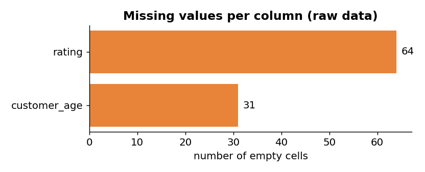
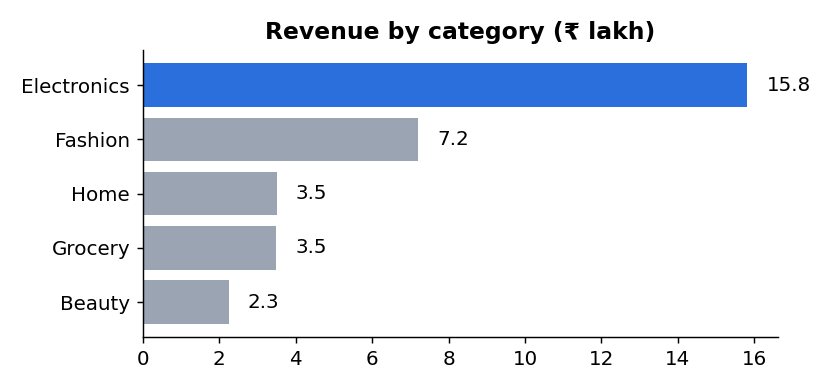
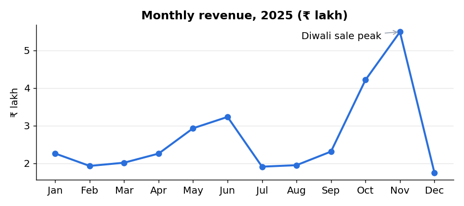
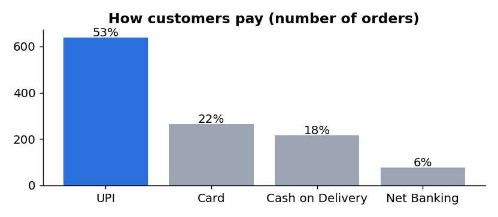
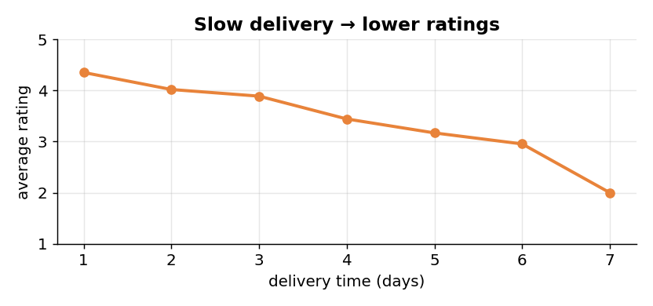

What is data science?
Read the definition again and notice what it is not saying. It is not "making charts" and it is not "training AI models". Those are tools. The goal is always the same: a better decision than you could make without the data.
| Key word | What it means | KiranaMart example |
|---|---|---|
| Data | Raw recorded facts: numbers, text, images, clicks | Order KM10287: 2025-01-01, Mumbai, Beauty, ₹1,520, UPI |
| Statistics | Summarising and reasoning under uncertainty | Average rating is 3.84 ★; is a drop to 3.7 real or just noise? |
| Programming | Handling data at scale with code | Python + pandas reads 1,208 rows in a fraction of a second |
| Domain knowledge | Understanding the business or field | Knowing that Diwali changes buying behaviour in Oct–Nov |
| Insight | A non-obvious, useful finding | Electronics is 13% of orders but 49% of revenue |
| Decision | An action taken because of the insight | Stock extra electronics before October |
From data to wisdom: the DIKW pyramid
Data science moves you up this pyramid. Each level adds context and meaning to the one below.
The three skills: Drew Conway’s Venn diagram
Programming + Stats without domain knowledge gives you machine learning that may optimise the wrong thing.
Programming + Domain without stats is the danger zone: you can produce convincing-looking analysis that is statistically wrong.
Stats + Domain without programming is traditional research: correct, but slow and hard to scale.
Why data science matters now
Three things changed together: we create far more data, storage and computing became cheap, and good open-source tools (Python, pandas, scikit-learn) made analysis possible for anyone.
Approximate figures based on IDC Global DataSphere estimates. 1 zettabyte (ZB) = 1021 bytes = one billion terabytes.
CAGR = (180 / 2)^(1/15) − 1 = 90^0.0667 − 1 ≈ 0.35, so about 35% more data every year.Doubling time
= ln 2 / ln 1.35 ≈ 0.693 / 0.300 ≈ 2.3 years. Every 2.3 years the world produces twice as much data as before.
The 5 V’s of big data
| V | Meaning | Indian example | Challenge it creates |
|---|---|---|---|
| Volume | How much data | UPI handles well over 10 billion payments a month | Cannot fit on one machine; needs distributed storage |
| Velocity | How fast it arrives | Every UPI payment must pass a fraud check in milliseconds | Real-time (streaming) processing |
| Variety | How many forms | Food app: orders (tables), reviews (text), dish photos (images), GPS (location) | Different tools for each type |
| Veracity | How trustworthy | Our data has “delhi ” and “Delhi”, duplicates, quantity −1 | Cleaning and validation |
| Value | How useful | Knowing slow delivery causes bad ratings is worth acting on | Choosing the right question |
Where the value comes from
Replace guesswork with evidence: which product, which price, which city.
Each user sees the products, songs or videos most relevant to them.
Forecast demand so you neither run out of stock nor waste it.
Detect fraud, defaults and machine failures before they happen.
Maps ETAs, credit scores, voice assistants are all data products.
Disease surveillance, crop advisories, disaster early warning.
The data science lifecycle
Every data project, small or huge, moves through the same stages. It is a cycle, not a straight line: results from one round raise new questions for the next.
| # | Stage | Key question | KiranaMart example | Typical tools |
|---|---|---|---|---|
| 1 | Problem definition | What decision are we trying to improve? | “Why are ratings falling, and what should we fix?” | Meetings, KPIs |
| 2 | Data collection | What data exists and how do we get it? | Export orders from the billing database to CSV | SQL, APIs, scraping |
| 3 | Data cleaning | Is the data correct and consistent? | Remove 8 duplicates, fix “delhi ”, drop qty −1 | pandas |
| 4 | Exploratory analysis | What patterns and surprises are there? | Revenue by month, category, city | pandas, Matplotlib |
| 5 | Modeling | Can we describe or predict it with a model? | rating ≈ −0.29 × delivery_days + 4.66 | NumPy, scikit-learn |
| 6 | Evaluation | Is the model good enough to trust? | Average error 0.58 stars; pattern is clear | Metrics, validation |
| 7 | Deployment and monitoring | How do people use it, and does it keep working? | Weekly dashboard; alert if delivery > 3 days | Dashboards, APIs |
Where does the time actually go?
Indicative split. Practitioners regularly report that preparing data takes more time than modeling it.
Walk-through: the lifecycle on real data
Below is real Python run on our dataset. Every output is exactly what the code prints. You will run the same code in the lab.
Collect: load the data and look at it
import pandas as pd
df = pd.read_csv("kiranamart_sales_2025.csv")
print(df.shape) # (rows, columns)
print(df.isna().sum()[df.isna().sum() > 0])
print("Duplicate rows:", df.duplicated().sum())
print("Rows with quantity <= 0:", (df["quantity"] <= 0).sum())
print(sorted(df["city"].unique()))
(1208, 12) customer_age 31 rating 64 Duplicate rows: 8 Rows with quantity <= 0: 3 ['Bengaluru', 'Chandigarh', 'Delhi', 'Hyderabad', 'Mumbai', 'Pune', 'delhi ']

- 64 orders without a rating, 31 without an age
- 8 exact duplicate rows (an order counted twice)
- 3 orders with quantity −1 (impossible)
- “delhi ” with a space and lower-case d: a 7th “city” that does not exist
Clean: fix what is wrong, keep what is useful
clean = df.drop_duplicates().copy() # remove the 8 duplicates
clean = clean[clean["quantity"] > 0] # drop impossible quantities
clean["city"] = clean["city"].str.strip().str.title() # "delhi " -> "Delhi"
clean["order_date"] = pd.to_datetime(clean["order_date"])
clean["revenue"] = clean["quantity"] * clean["unit_price"] * (1 - clean["discount_pct"] / 100)
print("Rows before:", len(df), " after cleaning:", len(clean))
Rows before: 1208 after cleaning: 1197
Explore: ask questions, draw pictures
by_cat = clean.groupby("category").agg(orders=("order_id", "count"), revenue=("revenue", "sum"))
by_cat["share_of_orders_%"] = (100 * by_cat["orders"] / by_cat["orders"].sum()).round(1)
by_cat["share_of_revenue_%"] = (100 * by_cat["revenue"] / by_cat["revenue"].sum()).round(1)
print(by_cat.sort_values("revenue", ascending=False).drop(columns="revenue"))
orders share_of_orders_% share_of_revenue_% category Electronics 160 13.4 49.0 Fashion 266 22.2 22.3 Home 151 12.6 10.9 Grocery 465 38.8 10.8 Beauty 155 12.9 7.0



Model: describe the pattern with an equation
import numpy as np
rated = clean.dropna(subset=["rating"])
a, b = np.polyfit(rated["delivery_days"], rated["rating"], deg=1) # best straight line
r = np.corrcoef(rated["delivery_days"], rated["rating"])[0, 1]
print(f"rating = {a:.2f} x delivery_days + {b:.2f} (r = {r:.2f})")
rating = -0.29 x delivery_days + 4.66 (r = -0.47)

The model says: start at 4.66 ★, then lose 0.29 ★ for every day of delivery.
The correlation r = −0.47 is negative (one goes up, the other goes down) and moderate (other things affect ratings too).
Evaluate
pred = a * rated["delivery_days"] + b print(round((rated["rating"] - pred).abs().mean(), 2))
0.58
On average the prediction is off by 0.58 stars. That is not good enough to predict one customer’s exact rating, but it is good enough for the business question: delivery speed clearly matters.
Deploy and monitor
For KiranaMart, “deployment” is a one-page weekly dashboard plus an alert when any city’s average delivery goes above 3 days. Monitoring means checking every month that the pattern still holds. Customer behaviour changes; a model that was right last year can drift.
Put the lifecycle in order
Click the stages in the correct order.
Key roles and responsibilities
Real projects are done by teams. Think of a restaurant:
| Role | Main question | Responsibilities | Key tools | Typical output |
|---|---|---|---|---|
| Data Analyst | What happened, and why? | Query data, build reports and dashboards, explain trends | SQL, Excel, Power BI / Tableau, pandas | Weekly sales dashboard |
| Data Scientist | What will happen? What should we do? | Frame problems, explore data, build and evaluate models, communicate findings | Python, pandas, scikit-learn, statistics | Churn prediction model + recommendations |
| Data Engineer | Is the right data available, reliable and fast? | Build pipelines (ETL), databases, data warehouses; keep data flowing | SQL, Spark, Airflow, cloud storage | Nightly pipeline that loads all orders |
| ML Engineer | How do we run the model in production? | Package models as services, scale them, make them fast | Python, Docker, APIs, cloud ML platforms | Recommendation API serving every page |
| Business Analyst | What does the business really need? | Gather requirements, define KPIs, translate between business and tech | Excel, documentation, BI tools | Problem statement with success metrics |
| Data Architect | How should all our data be organised? | Design data models, storage, security and governance | Database design, cloud architecture | Company-wide data blueprint |
| MLOps Engineer | Is the model still working well? | Automate retraining, monitor drift, version models and data | MLflow, CI/CD, monitoring tools | Alert: “model accuracy fell 8% this month” |
| DS Manager / Product Owner | Are we working on the most valuable problems? | Prioritise projects, manage the team, measure business impact | Roadmaps, KPIs | Quarterly plan tied to revenue goals |
Who leads which stage?
| Role | Problem | Collect | Clean | EDA | Model | Evaluate | Deploy |
|---|---|---|---|---|---|---|---|
| Business Analyst | ● | ○ | ○ | ||||
| Data Engineer | ● | ● | ○ | ||||
| Data Analyst | ○ | ○ | ● | ● | ○ | ||
| Data Scientist | ○ | ○ | ● | ● | ● | ||
| ML / MLOps Engineer | ○ | ○ | ● |
● leads · ○ supports. In a small company one person may play three of these roles.
Who should take this task?
Data science vs AI vs machine learning
These words are often used as if they mean the same thing. They do not. AI, ML and DL are nested; data science overlaps with them but also includes a lot that is not AI at all.
Making machines do tasks that need human-like intelligence: reasoning, understanding language, seeing, planning. Can be rule-based or learned.
A part of AI where the machine learns rules from data instead of being given them by a programmer.
A part of ML that uses many-layered neural networks. Best for images, speech and text. Needs lots of data and computing.
The end-to-end process of getting insight and decisions from data. Uses ML when useful, but also statistics, visualisation and plain good thinking.
| Data Science | Artificial Intelligence | Machine Learning | |
|---|---|---|---|
| Main goal | Insight and better decisions | Intelligent behaviour | Learn patterns to predict |
| Question | “What is happening and what should we do?” | “Can a machine act intelligently here?” | “Given past examples, what is the answer for a new one?” |
| Typical output | Report, dashboard, recommendation, model | Chatbot, robot, game player, assistant | Trained model (predictor) |
| Methods | Statistics, EDA, visualisation, ML | Rules, search, logic, ML, DL | Regression, decision trees, clustering, neural nets |
| KiranaMart example | “Ratings fall with delivery time; fix delivery in slow cities.” | A chatbot that answers “Where is my order?” | Predict whether a new order will get a bad rating |
| Always needs ML? | No | No | Yes, by definition |
Traditional programming vs machine learning
# Traditional: a human writes the rule
def expected_rating(delivery_days):
if delivery_days <= 3:
return 4
return 3
print(expected_rating(2), expected_rating(6))
# Machine learning: the rule is learned from 1,133 rated orders a, b = np.polyfit(rated["delivery_days"], rated["rating"], 1) predict = lambda d: round(a * d + b, 2) print(predict(2), predict(6))
Traditional: 4 3 (a guess someone typed in) Learned: 4.08 2.91 (found from data, and updates when the data changes)
Which one is it?
Choose the best label for each example.
- “Data science = AI.” A dashboard that shows Electronics earns half the revenue is pure data science with zero AI.
- “All AI learns from data.” A chess engine based on hand-written rules and search is AI but not ML.
- “Deep learning is always better.” For a table of 1,200 orders, a simple line or tree usually beats a neural network and is easier to explain.
Real-life applications
You use dozens of data products before lunch. Here is one ordinary day:
🏥Healthcare
- Problem
- Find disease early
- Data
- X-rays, scans, lab reports, patient history
- Method
- Image classification (deep learning), risk scores
- Result
- Screening support, e.g. for diabetic eye disease and TB from X-rays
🏦Banking and fintech
- Problem
- Stop fraud, decide on loans
- Data
- Transaction history, device, location, repayments
- Method
- Anomaly detection, classification
- Result
- Suspicious payments flagged in real time; faster credit decisions
🛒Retail and e-commerce
- Problem
- What to show, stock and price
- Data
- Clicks, baskets, searches, sales history
- Method
- Recommendation systems, demand forecasting
- Result
- Personal home pages; stock planned before big sales
🛵Food and quick delivery
- Problem
- Accurate delivery times
- Data
- GPS, traffic, prep times, weather
- Method
- Regression, route optimisation
- Result
- ETAs shown to customers; riders assigned efficiently
🚆Transport
- Problem
- Traffic, seat demand, pricing
- Data
- Phone locations, bookings, timetables
- Method
- Time-series forecasting
- Result
- Live traffic maps; waitlist confirmation chances; dynamic fares
🌾Agriculture
- Problem
- When to sow, irrigate, sell
- Data
- Weather, soil, satellite images, mandi prices
- Method
- Forecasting, image analysis
- Result
- Crop and weather advisories sent to farmers’ phones
🎬Entertainment
- Problem
- Keep viewers watching
- Data
- Watch history, pauses, skips, ratings
- Method
- Recommendation, A/B testing
- Result
- Personal rows and thumbnails; decisions on what to produce
🏏Sports
- Problem
- Pick players, plan strategy
- Data
- Ball-by-ball records, ball-tracking, fitness data
- Method
- Statistics, simulation, computer vision
- Result
- Match-ups, field placements, auction strategy, DRS ball-tracking
🏛️Government
- Problem
- Plan services, respond to disasters
- Data
- Census, satellite, weather radar, tax filings
- Method
- Forecasting, geo-analysis
- Result
- Cyclone early warnings and evacuations; targeted welfare schemes
Data science methodology: CRISP-DM
CRISP-DM = CRoss-Industry Standard Process for Data Mining. It was created in the late 1990s by a group of companies (including SPSS, Teradata, Daimler-Benz and NCR) and published in 2000. It is industry-neutral (works for banks, hospitals, shops) and tool-neutral (Python, R or Excel), which is why it is still the most widely used process model for data projects.
Three things to remember
1. It starts and ends with the business. Phase 1 is not “get data”, it is “understand the problem”. Evaluation checks the result against the business goal, not just accuracy.
2. It is iterative. Going back is normal. Data Understanding often changes the question. Modeling often needs different preparation.
3. Data is in the centre. Every phase reads from or changes the data.
| Phase | Key questions | Main tasks | Deliverable |
|---|---|---|---|
| 1. Business Understanding | What is the goal? How will we measure success? | Define objectives, assess situation, set data-mining goals, plan project | Problem statement, success criteria, project plan |
| 2. Data Understanding | What data do we have? Is it good enough? | Collect initial data, describe, explore, verify quality | Data description and quality report |
| 3. Data Preparation | How do we get it model-ready? | Select, clean, construct new columns, integrate, format | Final clean dataset |
| 4. Modeling | Which technique fits? | Choose techniques, design tests, build and tune models | Models and their settings |
| 5. Evaluation | Does it meet the business goal? | Evaluate results, review process, decide next steps | Go / no-go decision |
| 6. Deployment | How will it be used and maintained? | Plan deployment, monitoring and maintenance, final report | Live solution, final report, monitoring plan |
Case study: KiranaMart’s rating problem, phase by phase
1 · Business Understanding
The manager notices more 1★ and 2★ reviews. Business goal: raise the average rating from 3.84 ★ to 4.0 ★ within 3 months. Data science goal: find which measurable factors drive low ratings.
2 · Data Understanding
1,208 orders, 12 columns. Rating missing in 64 orders, 8 duplicates, 3 impossible quantities, an extra city spelling. Ratings range 1–5. Delivery takes 1–7 days, mostly 2–4.
3 · Data Preparation
Remove duplicates and bad quantities, fix city names, convert dates, compute revenue. Use only rated orders (1,133) for rating analysis. Create a new column slow = delivery_days > 3.
4 · Modeling
Compare groups and fit a simple line:
| Delivery | Share of orders | Average rating | Ratings of 1–2 ★ |
|---|---|---|---|
| Fast (≤ 3 days) | 69% | 4.07 | 1.9% |
| Slow (> 3 days) | 31% | 3.33 | 11.5% |
Model: rating = −0.29 × delivery_days + 4.66
5 · Evaluation
Slow orders are 6× more likely to get a 1–2 ★ rating. If all slow orders reached the fast-order average, the overall rating would be about 0.69 × 4.07 + 0.31 × 4.07 = 4.07 ★, which beats the 4.0 target. Decision: go. We also check alternatives: average delivery is about the same in every city (2.7–2.9 days) and category, so the fix is company-wide, not one city.
6 · Deployment
Add a delivery partner for slow pin codes. Launch a weekly dashboard and an alert when average delivery passes 3 days. Re-check after 3 months: did ratings really rise? That result starts the next CRISP-DM cycle.
CRISP-DM and the other methodologies
| Method | Steps | Best known for |
|---|---|---|
| CRISP-DM | Business understanding → Data understanding → Preparation → Modeling → Evaluation → Deployment | Strong business focus; most widely used; industry neutral |
| KDD (Knowledge Discovery in Databases) | Selection → Preprocessing → Transformation → Data mining → Interpretation | Academic origin (1996); very data-focused |
| SEMMA (SAS) | Sample → Explore → Modify → Model → Assess | Tied to SAS tools; no business-understanding step |
| OSEMN | Obtain → Scrub → Explore → Model → iNterpret | Simple, easy to remember (“awesome”) |
| TDSP (Microsoft) | Business understanding → Data acquisition → Modeling → Deployment → Customer acceptance | Adds team roles and project management |
Importance of data-driven decision-making
| Gut-feel decision | Data-driven decision | |
|---|---|---|
| Basis | Experience, intuition, opinion | Measured evidence |
| KiranaMart example | “Grocery has the most orders, put our budget there.” | “Electronics earns 49% of revenue, protect its stock.” |
| Can be checked? | Hard to verify | Measurable; can be tested |
| Bias | High (memory, ego, recent events) | Lower (but data can be biased too) |
| Learning | Slow | Every decision is measured and improves the next one |
The DDDM cycle
Worked example 1: an A/B test
KiranaMart wants to know if a “Free delivery above ₹499” banner increases orders. Instead of arguing, they run a test: half the visitors see the old page (A), half see the banner (B).
p = orders ÷ visitors · Lift = (pB − pA) ÷ pAIs the difference real or luck? Two-proportion z-test:
z = (pB − pA) ÷ √( p̂(1−p̂)(1/nA + 1/nB) ), where p̂ is the combined rate. If |z| > 1.96, we are about 95% confident the difference is real. (Full details in Unit 2.)
Worked example 2: expected value
Should KiranaMart buy 200 extra phones for Diwali? Each costs ₹9,000 and sells for ₹11,000 (profit ₹2,000). An unsold phone is returned to the supplier for ₹7,500 (loss ₹1,500).
EV per phone = p × 2000 − (1 − p) × 1500, where p is the chance a phone sells.Break-even:
p × 2000 = (1 − p) × 1500 → p = 1500 ÷ 3500 ≈ 0.43. Buy only if more than 43% are likely to sell.
With a gut feeling, “it might sell” could mean anything. With data (“last Diwali we sold 70% of extra stock”), the decision becomes simple arithmetic: about ₹1.9 lakh expected profit.
Traps that fool even data-driven teams
| Trap | What goes wrong | Example |
|---|---|---|
| Correlation ≠ causation | Two things move together, but one does not cause the other | Ice-cream sales and drowning both rise in summer. Heat causes both. |
| Sampling bias | Data does not represent everyone | An online survey misses people without internet |
| Survivorship bias | Looking only at the winners | Studying only successful dropouts and concluding “drop out to succeed” |
| Confirmation bias | Looking only for data that agrees with you | Showing the one month where your idea worked |
| Garbage in, garbage out | Bad data gives bad answers | Counting “delhi ” and “Delhi” separately under-reports Delhi |
| Vanity metrics | Measuring what looks good, not what matters | App downloads go up but nobody places an order |
Hands-on lab: explore KiranaMart yourself
Part A runs in this page; no installation needed. Part B is the same project in Python, for the computer lab or at home.
Part A · Data Explorer (in the browser)
Your tasks
Check your answers
1. Seven: “delhi ” (lower case + space) is counted as a separate city. 2. 11 rows removed (8 duplicates, 3 negative quantities); the 5 “delhi ” orders join Delhi. 3. Grocery wins on orders, Electronics on revenue (about half). Revenue matters more for profit planning, order count for delivery workload. 4. October and November, the festive (Diwali) sale season. 5. Rating falls steadily as delivery days grow. It is a strong correlation, but to prove causation you would run an experiment. 6. Answers vary; a good one quotes a number from the chart.
Part B · The same project in Python
1. Dataset
kiranamart_sales_2025.csv
2. Notebook
Open in Jupyter or VS Code
or: script
python unit1_lab.py
- Put the CSV and the notebook in the same folder.
- Install the libraries once:
pip install pandas matplotlib numpy - Run each cell from top to bottom. The notebook is organised by the six CRISP-DM phases.
- The last cell saves
kiranamart_dashboard.pngand prints three recommendations for the manager.
groupby, one chart and one sentence of recommendation. Label each step with its CRISP-DM phase.Summary and revision
| Topic | Remember this |
|---|---|
| Definition | Stats + programming + domain knowledge → insight → decisions and data products |
| Significance | Data volume doubles about every 2–3 years; 5 V’s: volume, velocity, variety, veracity, value |
| Lifecycle | Problem → Collect → Clean → EDA → Model → Evaluate → Deploy/Monitor, repeated; cleaning takes the most time |
| Roles | Analyst (what happened), Scientist (what will happen), Engineer (data pipelines), ML Engineer (production), Business Analyst (requirements) |
| DS vs AI vs ML | AI ⊃ ML ⊃ DL. ML learns rules from data. DS is about insight and may or may not use ML |
| CRISP-DM | Business Understanding → Data Understanding → Data Preparation → Modeling → Evaluation → Deployment; iterative; business-first |
| DDDM | Evidence over HiPPO. Use A/B tests and expected value. Beware correlation ≠ causation and biased data |